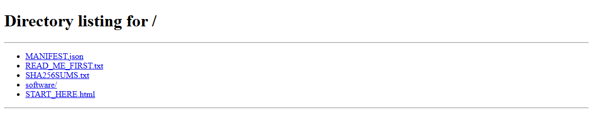
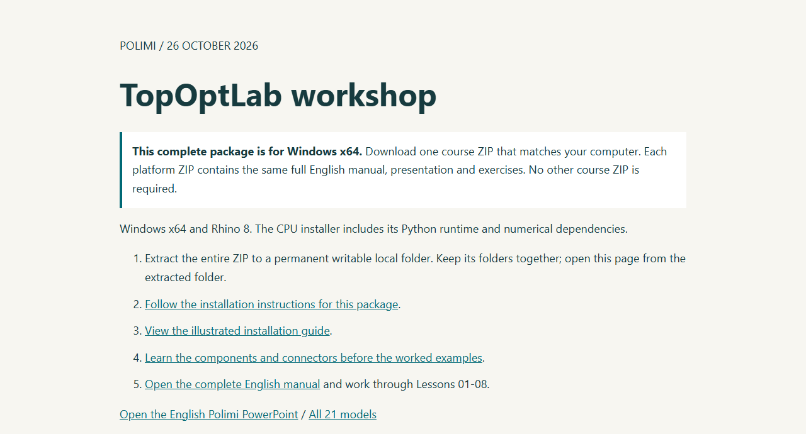
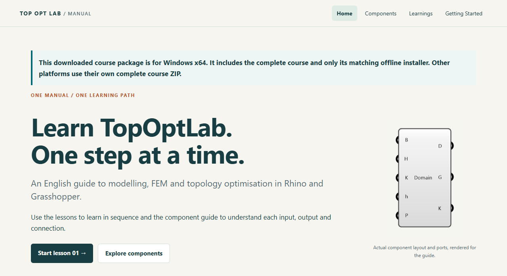
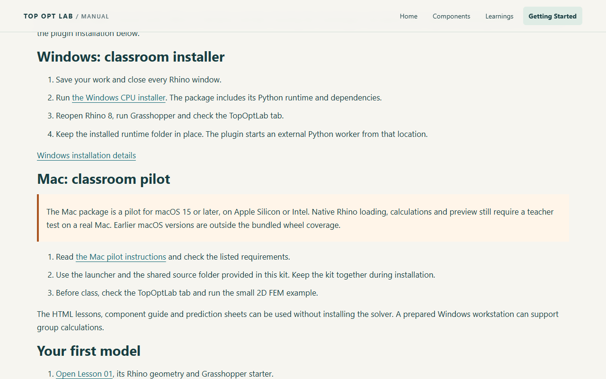
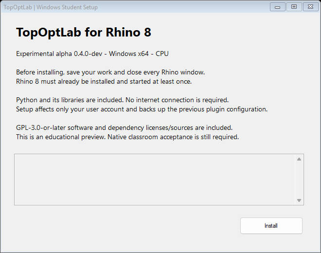
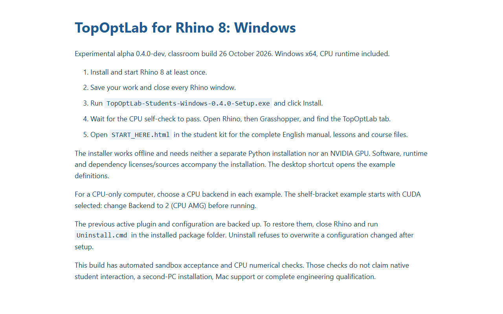
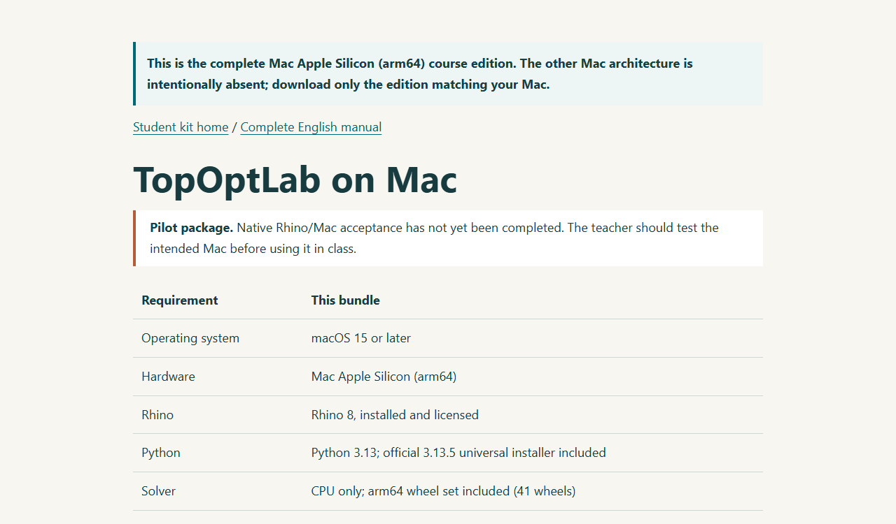
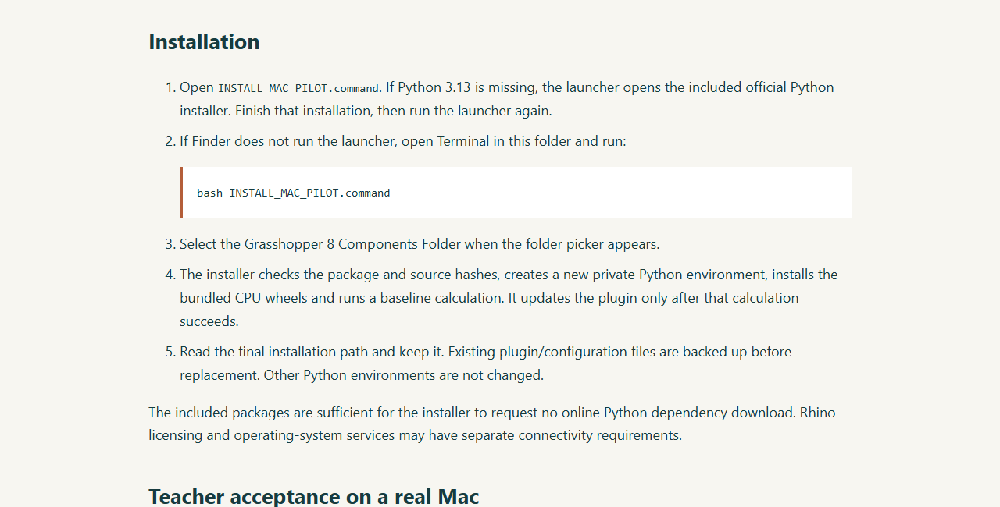

PRE-CLASS / ILLUSTRATED INSTALLATION
TopOptLab on your computer.
Follow the supplied classroom kit from extraction to the first Grasshopper check. Rhino 8 with a working licence is required for calculations. The complete HTML manual works offline without installing the solver.
Getting Started and installer links
PowerPoint presentations are separate instructor material. Follow the illustrated HTML steps below.
Archived offline classroom route: the screenshots below describe the prepared October ZIP kits, whose release is still a draft. Use the current Package Manager instructions above for public installation. The Mac alpha has not yet been tested inside Rhino/Grasshopper for Mac.
1. Extract the matching ZIP
- Choose Windows x64, Mac Apple Silicon or Mac Intel from the downloads above. On Mac, Apple menu > About This Mac identifies the processor.
- Extract the complete ZIP into a short, writable local folder near your home directory. Do not merge different platform packages.
- Keep
START_HERE.htmlandsoftware/together inTopOptLab_Students_2026-10-26.

2. Open the one English manual
- Open the extracted folder and double-click
START_HERE.html. - On that page, click Open the complete English manual.
- Use Getting Started for installation, Learnings for the course and Components for the full input/output reference.
If needed, open software/source/TopOptLab-Rhino/docs/manual/index.html directly in a browser. The manual works offline without Rhino or Python.


3. Windows: close Rhino and launch setup
- Save your work and close every Rhino window.
- Open the kit folder
software/windows/and runTopOptLab-Students-Windows-0.4.0-Setup.exe. - Follow the English installer instructions for your user account. The CPU runtime and numerical dependencies are included.


The interface image shows the initial installer controls. Continue on your own computer and read its actual completion or error message before reopening Rhino.

4. Mac: prepare the pilot and run its launcher
- Use the matching Apple Silicon or Intel ZIP with macOS 15 or later and Rhino 8. Read
software/mac-pilot/README.html. - Before closing Rhino, open Grasshopper > File > Special Folders > Components Folder and note that folder location. Then save and close Rhino.
- Keep
software/mac-pilot/besidesoftware/source/. RunINSTALL_MAC_PILOT.command. If it opens the included Python 3.13 installer, finish that installation and run the launcher again. - Select the noted Grasshopper 8 Components Folder. Native Python is required; do not run through Rosetta. Each ZIP includes only its matching native wheel set.
- Reopen Rhino and Grasshopper, then check a small 2D example. Complete a teacher test on a real Mac before relying on it for class calculations.


These images show the Apple Silicon edition of the supplied pilot guide in a browser. They do not show a completed native Mac installation. Earlier macOS versions are outside the bundled dependency coverage.
5. Reopen Rhino and check the components
- Start Rhino 8 and run Grasshopper.
- Find the TopOptLab tab and place TopOpt Domain.
- Use the component primer before building the example.
- In the first plate exercise, connect the closed rectangle to B and h = 6 mm to lowercase h. Confirm 200 cells and use Display > Preview Mesh Edges to show the grid.

Keep the installed runtime in place because the plugin starts an external Python worker. Read any runtime message and the Engineering Status panel when a check fails.